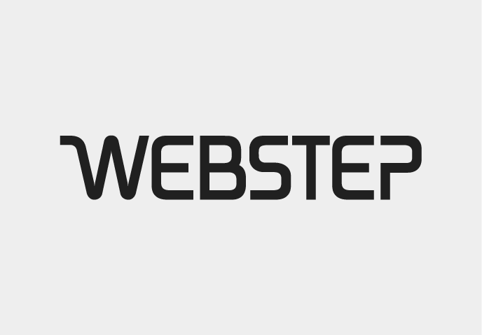

THANKS TO ALL OUR SPONSORS LAST YEAR


- 
On April 27th through 28th we gather once again in Oslo, Norway, for technical talks, workshops, discussions and craft beer.
We believe functional programming matters. There are plenty of general purpose programming conferences. If you are interested in a deep dive into functional programming, we think this conference is for you. This is the perfect size for a conference. Big enough to matter, but still intimate. Still not convinced? Have a look at last years schedule.
Call for speakers is opening soon. If you are working on somehting fun or exciting please consider sharing your experiences.

flatMap(Oslo) - A functional programming conference, with focus on Scala and the Java Virtual Machine.
On the 12th and 13th of May 2014, a group of enthusiasts organised the third flatMap(Oslo) conference. It was 2 amazing days. 200 attendees gathered for technical talks, workshops, discussions and craft beer. Feedback was great, and in 2015 we gather again for the 4th annual flatMap(Oslo). Our aim is for 200 attendees. This was always our goal, and what we believe is the perfect size for the conference. Big enough to matter, but still intimate. Also, we can't scale past the capacity of our brewery!
flatMap(Oslo) is organised by a group of developers from Arktekk – a small independent consultancy company based in Oslo, Norway. Our financial goal is to break even. Every penny we make will go into making the best possible conference. Together with our awesome sponsors we work hard to give you a conference tailored for enthusiasts of Scala and functional programming on the Java Virtual Machine.
Please read our Code of Conduct
Need to get in touch? Send us an email